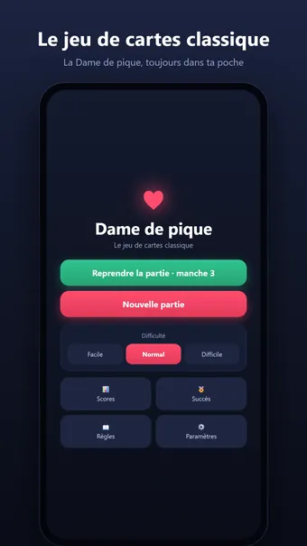
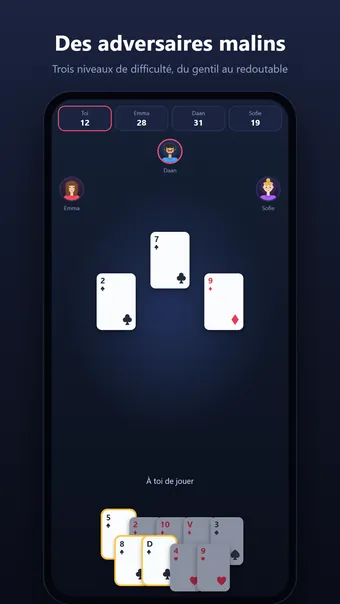
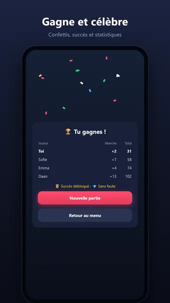
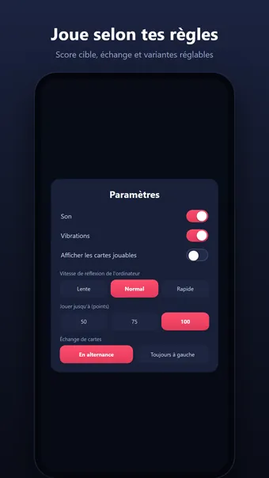

À propos de Dame de pique
Jouez à la Dame de pique, le jeu de cartes classique — à tout moment, partout et entièrement hors ligne. Vous contre trois joueurs de l'ordinateur : qui récoltera le moins de points de pénalité ?
Comment jouer
Chaque cœur dans vos plis coûte 1 point, et la dame de pique en coûte 13. Suivez la couleur, évitez les points... ou tentez de « faire la lune » en ramassant les 26 points de pénalité en une seule manche pour les refiler à vos adversaires. La partie s'achève dès qu'un joueur atteint le score cible ; celui qui a le moins de points l'emporte.
Vous découvrez les règles ? Les conseils intégrés vous expliquent le jeu pas à pas pendant que vous jouez.
Des adversaires malins
Trois niveaux de difficulté, de conciliant à redoutable. En Difficile, l'ordinateur compte les cartes, se défausse pour créer des coupes et repère même quand vous essayez discrètement de faire la lune.
Jouez selon vos règles
- Score cible réglable : 50, 75 ou 100 points
- Passe : tournante, toujours à gauche, toujours à droite ou jamais
- Variantes : le valet de carreau vaut −10, la dame de pique ouvre les cœurs
- Score de la lune : +26 pour les autres ou −26 pour celui qui la fait
Et aussi
- Débloquez 18 succès, de votre première victoire à une partie parfaite
- Statistiques détaillées : séries de victoires, score moyen et plus encore
- Mettez la partie en pause et reprenez-la plus tard, là où vous l'aviez laissée
- Son et retour haptique (désactivables dans les réglages)
- Fonctionne en mode paysage et sur tablette
Gratuit. L’application affiche des publicités, que vous pouvez supprimer avec un achat facultatif ; aucun compte n’est nécessaire.
Questions fréquentes
Dame de pique est-il gratuit ?
Oui. Dame de pique se télécharge et se joue gratuitement. L’application affiche des publicités, que vous pouvez supprimer avec un achat intégré facultatif.
Dame de pique fonctionne-t-il hors ligne ?
Oui. Dame de pique fonctionne sans connexion internet : vous pouvez jouer dans l’avion, dans le train ou partout sans Wi-Fi.
Faut-il un compte pour jouer à Dame de pique ?
Non. Aucune inscription ni connexion : ouvrez l’application et jouez. Vos parties et vos réglages restent sur votre appareil.
Comment jouer à Dame de pique ?
Chaque cœur dans vos plis coûte 1 point, et la dame de pique en coûte 13. Suivez la couleur, évitez les points... ou tentez de « faire la lune » en ramassant les 26 points de pénalité en une seule manche pour les refiler à vos adversaires. La partie s'achève dès qu'un joueur atteint le score cible ; celui qui a le moins de points l'emporte. Vous découvrez les règles ? Les conseils intégrés vous expliquent le jeu pas à pas pendant que vous jouez.
Où télécharger Dame de pique ?
Dame de pique est disponible pour les téléphones et tablettes Android sur Google Play. Utilisez le bouton en haut de cette page.
D’autres jeux qui pourraient vous plaire
Sudoku
Le sudoku classique. Des grilles à l'infini et un défi quotidien.
Google PlayDémineur
Le démineur classique. Des champs de mines à l'infini et un défi quotidien.
Google Play30 Seconds
Décrivez 5 mots en 30 secondes ! Un jeu de mots amusant à faire deviner.
Google PlayMentions légales
Vous trouverez ci-dessous les documents juridiques qui s’appliquent à Dame de pique.
Contact
Une question, un avis ou une demande liée à la vie privée ? Écrivez à joostmuijsenberg.dev@gmail.com.